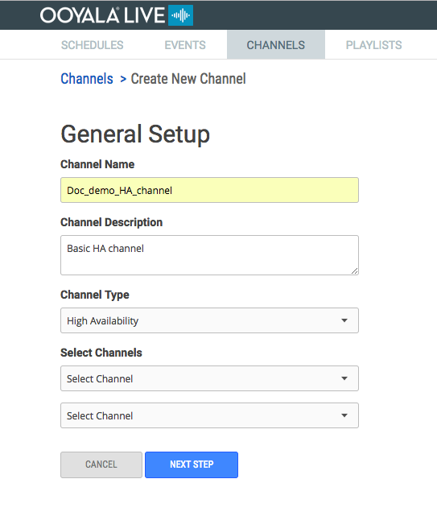
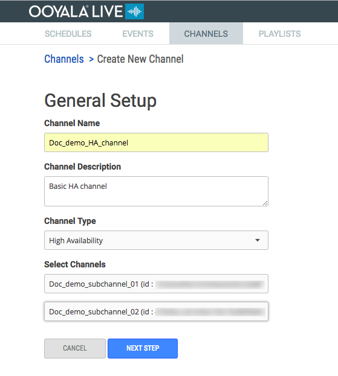
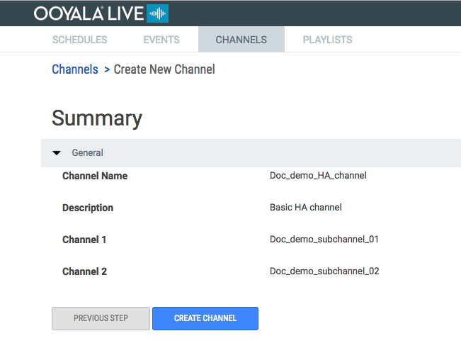

Create a High Availability (HA) channel to ensure automatic failover of critical live
streams.
You must have at least 2 channels, either 24x7 or Adhoc, configured.
Because the sub-channels have already been created, you only need to select the
channels you want to add to your HA channel.
-
Add a Channel Name and Channel
Description then select High Availability
for the Channel Type.

-
Select 2 similar channels from the Select Channels
drop-down list, and click NEXT STEP.

-
Click CREATE CHANNEL
